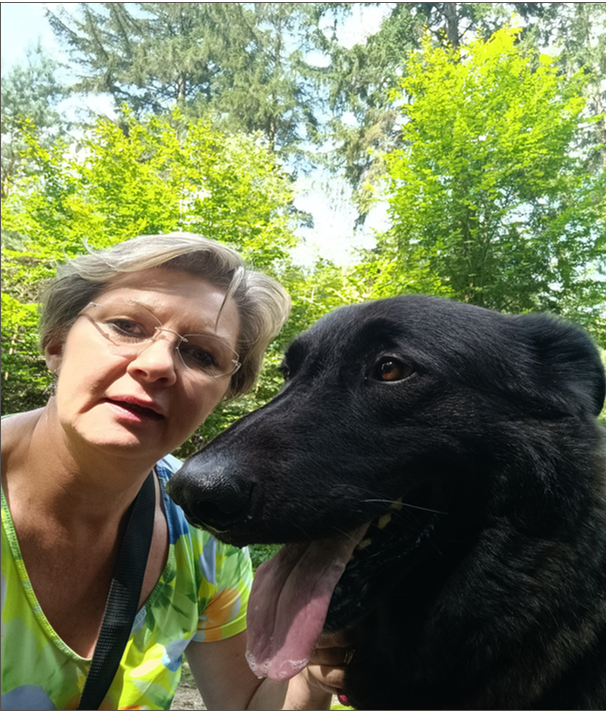

Über mich
Lerne die Künstlerin hinter den Bildern kennen.

Steckbrief
- Wohnort: Bonn (Bad Godesberg)
- Frauchen von: Balou
- Motive: Tierportraits, Lieblingsorte & Landschaften
- Techniken: Acryl, Öl, Ölkreide, Mischtechniken
- Ausbildung: Alanus Hochschule Alfter, Art Studio Bonn-Friesdorf
- Motivation: Freude am Festhalten lebendiger Emotionen & Momente
Hallo, ich bin Manuela,
...Künstlerin aus Bonn, Hundeliebhaberin und Frauchen von Balou
Ich liebe es, besondere Momente, Tiere oder Landschaften mit Pinsel und lebendigen Farben auf Leinwand oder Papier festzuhalten.
Meine Werke erzählen Geschichten: sei es der treue Blick eines Hundes, die Weite der französischen Atlantikküste oder historische Impressionen meiner Heimat Bonn und des Siebengebirges.
Ich male das, was mich berührt und fasziniert – in traditioneller Ölmalerei, leuchtenden Acrylfarben sowie feinen Ölkreide- und Multimediatechniken.
Jedes Bild ist ein handgemaltes Unikat, welches mit viel Liebe zum Detail und fundiertem künstlerischen Handwerk entsteht.
Gerne male ich auch Dein persönliches Wunschmotiv! Schau Dir meine Leistungen an oder stöbere durch die Bildergalerie.
Künstlerische Ausbildung & Dozierende
Fundiertes Handwerk durch kontinuierliche Weiterbildung an anerkannten Kunstakademien:
Alanus Hochschule für Kunst und Gesellschaft
Alfter bei BonnJahreskurs „Ein Jahr für die Kunst“ sowie vertiefende Seminare und Intensivwochen zur künstlerischen Professionalisierung.
Art Studio Bonn-Friesdorf
Bad Godesberg · FriesdorfIntensiver Privatunterricht in fortgeschrittenen Maltechniken, Farbenlehre, Pinselduktus und Komposition.
Kunstschule Aachen & VHS Bonn
Aachen & BonnFachkurse in figürlichem Zeichnen, Porträtmalerei, Landschaftsstudien und klassischer Öl- und Acrylmalerei.
Kunst für Dein Zuhause
Mit vielen individuellen Unikaten und vielen glücklichen Auftraggebern schaffe ich bleibende Werte und persönliche Erinnerungsstücke.
Mein Info-Flyer
Klicke auf ein Bild für die Großansicht oder lade dir den Flyer als PDF herunter.


Flyer herunterladen (PDF)
Digitale Visitenkarte
Bewege die Maus über die Karte oder tippe sie an, um sie umzudrehen.
Manuela Schenk
Künstlerin & Inhaberin- +49 163 2662435
- manufaktur-malerei@web.de
- Bonn, Deutschland
- manufaktur.shop